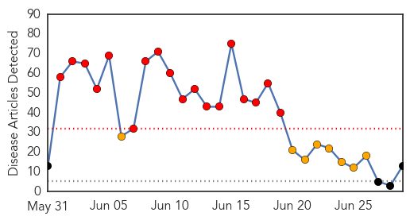
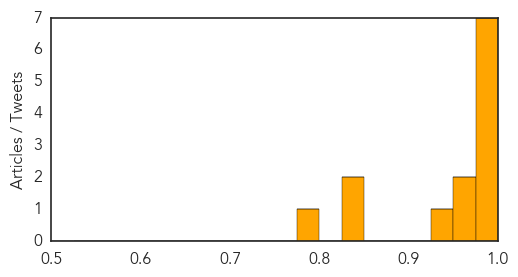

Mold/Fungal
30-Day Web Trend
30-Day Twitter Trend
0 alerts, 0 warnings

Article Locations


Article Confidences

Top Articles:
-
No articles found for Jun 29, 2015
Top Tweets:
-
No tweets found for Jun 29, 2015
MERS
30-Day Web Trend
18 alerts, 8 warnings

30-Day Twitter Trend
Article Locations

Article Confidences
Top Articles:
- 0.999
- Why is Mers spreading so quickly in South Korea?
- 0.998
- South Korea MERS totals grow by 1 infection, 1 death
- 0.997
- MERS’s Best Friend
- 0.997
- MERS origins, treatment explained
- 0.994
- MERS vaccine 'ready for human trials'
- 0.989
- First-ever possible treatments for MERS
- 0.987
- MERS in South Korea under control, no new cases, no recent deaths
- 0.973
- Prevention of Mers-Cov should be everybody's concern
- 0.950
- Experts cover MERS outbreak in American Journal of Respiratory and Critical Care Medicine
- 0.930
- Thai Health Authorities Move Successfully to Nip MERS virus
- 0.835
- First-Ever Possible Treatments for Middle East Respiratory Syndrome; UMSOM Researchers Identify Two Promising Candidates to Prevent and Treat Deadly Epidemic
- 0.828
- First-Ever Possible Treatments For MERS; Researchers Identify Two Promising Candidates
- 0.783
- Cebu News, The Freeman Sections, The Freeman
Top Tweets:
-
No tweets found for Jun 29, 2015